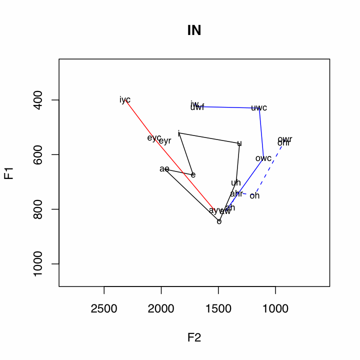
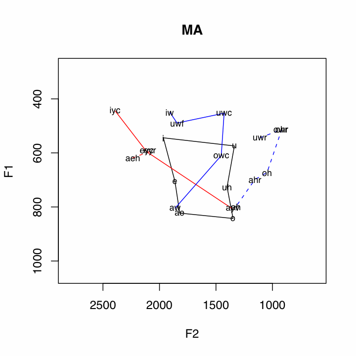

| Home | Research |
Download (updated January 23, 2009)
You can download the script here and source it locally, or source it directly from this location with the following command:
source("http://www.ling.upenn.edu/~joseff/scripts/plot_tels1.1.R")
Usage:
anae.plot(telsur_439, output)
telsur_439 = The full path to the telsur_439 file.
output = An already existing output directory. The script automatically organizes the output into directories and subdirectories, so this will not clutter the designated directory.
Compatibility:
**Updated 1.23.09**
This script should now be compatible with PC versions of R. A problem some PC systems will have will be the way the script reads the data into R from the excel file. The command read.xls in the gdata package calls upon perl, which may not be correctly configured on PC's. If you receive an error along the lines of "perl cannot be found," open the telsur_439.xls file in excel, save it as a comma separated (.csv) file, and point anae.plot at that.
Required Packages
gdata: If gdata is not already installed in your system, this script will attempt to install it. This step introduces the largest source of error. If you recieve an error involving the installation of the gdata package, try installing it yourself, either with the package manager, or with the following command:
install.packages("gdata",dependencies = T)
Information
This script is designed to automatically plot the data published with the Atlas of North American English (Labov, Ash and Boberg 2006). The specific file it utilizes is "telsur_439.xls," which can be found on the CD bundled with the atlas. If your library has a copy of the atlas, the data CD should also be available. This script will save 282 plots of the ANAE data, for a total size of about 2.2 MB.
The data is ploted in the following way:
Subsystem Vowels Plotting Method Short Vowels i
e
æ("ae" in plots)
o
ʌ("uh" in plots)
uBlack Polygon Front Upgliding iyc
eyc
ayv
(ay0 and oy omitted)Solid Red Line Back Upgliding iw
uwf
uwc
owc
awSolid Blue Line Front Ingliding eyr
æh(aeh in plots)Red Dashed Line Back Ingliding uwr
owr
ohr
oh
ahr
ahBlue Dashed Line
The plots will be saved to directories automatically created by the script. If the specified output directory is ~, then the directory ~/ANAE will be created. Within ~/ANAE, there will be a directory for every dialect region named after the one, two, or three letter specification from the spreadsheet. Each dialect region directory will contain a plot of the over all dialect data, as well as a directory called SPCOM, which contains plots of all the speech communities sampled from that region.
The following is the directory listing for the Boston dialect region, B:
ANAE/B/This script will also leave an object called anae in your workspace. This is a reformatted data frame based on the telsur_439.xls file. Every row has the mean F1 and F2 of a vowel from a speaker. The speaker and dialect info is in the columns in the usual way, and the vowel info is in the column VClass.
ANAE/B/B.pdf
ANAE/B/SPCOM
ANAE/B/SPCOM/Boston.pdf
ANAE/B/SPCOM/Concord.pdf
ANAE/B/SPCOM/Manchester.pdf
ANAE/B/SPCOM/Worcester.pdf
Uses:
By capitalizing on the notion of subsystems, quite a few relationships in the data are illuminated. For example, the pattern of the Northern Cities Shift is very clear below. One other relationship that can be seen in many places in the data is the /ay/-/aw/ crossover, where the nucleus of /aw/ is a front vowel, and the nucleus of /ay/ is a back vowel. This is clearly illustrated by the crossing of the red and blue solid lines. Two features which appear to be correlated with non-crossover dialects are little back vowel fronting, and the presence of a single low point vowel.
Some Cross Over Dialects

Some Non-Cross Over Dialects
Of course, this is just an example of the kind of inquiry that can be approached when looking at the data in this kind of way.
Future Goals:
Goals for this particular script include expanding system compatibility, as well as options to plot specific subsets of dialects and speech communities.
The greatest strength of this way of plotting the atlas data is in the representation of the short vowels. The visible cross over of the front and back upgliding vowels is also rather clear, but not is as quite a striking manner. These graphics are alredy very information dense, and adding much more information would risk muddying the waters. I would, however, like to find ways of graphically representing additional relationships in as clear a way as possible, such as tense-lax pairings, specific allophonic alternations of interest (e.g. ayV~ay0), phonemic contrasts of interest (e.g. ah~o~oh), or specific hypothesized patterns of sound changes. These goals are quite general, and not necessarilly limited to the ANAE data set.
Revisions in Progress
- A "save" option, which will allow the output of the script to be written to files in automatically organized directories, or to be plotted to the standard device to be reviewed there.
- The ability to plot specific dialect regions, speech communities, or speakers.
- End user usable versions of the subroutines, to allow a finer grained investigation of the data.
Older Versions
plot_tels1.0.1
Contact me with bugs or suggested revisions: